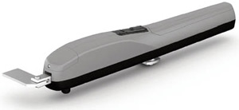

Автоматика
 Наша компания предлагает Вам так же приводы для любых типов ворот от итальянского производителя ROGER TECHNOLOGY. Итак, о чем же Вам все-таки стоит знать, выбирая привод автоматических ворот? Не вдаваясь подробно в технические нюансы (особо продвинутым поклонникам технических характеристик для ознакомления предоставляются таблицы и чертежи), попытаемся остановиться на главных критериях: надежность и адаптация к российским условиям.В редукторе каждого автоматического привода со временем накапливается влага. Это неизбежно. В конце концов – это привод автоматических ворот, а не герметически совершенная космическая станция. Действительно, проблемы в этом нет никакой... ровно до наступления суровой в наших краях зимы. И здесь, безобидная поначалу влага становится страшным врагом всех деталей редуктора автоматического привода. При отрицательных температурах начинается процесс кристаллизации частиц воды – в смазке редуктора образуются мелкие частички льда, которые начинают планомерное уничтожение трущихся деталей. Вы же представляете себе эффект от горсти песка, попавшего, не дай бог, в двигатель автомобиля? Примерно то же самое происходит в «замороженном» редукторе. Ну, хорошо – враг известен, но как с ним бороться? Ответ очевиден – использовать специальные, адаптированные виды смазки. Самое любопытное, что очевиден этот ответ почему-то единственной компании в мире - итальянской ROGER TECHNOLOGY. Кстати, этот же производитель упорно отказывается использовать в свой автоматике для ворот пластиковые шестерни. Почему? Да, все по той же причине – мороз. В условиях резко отрицательных температур пластмассовые шестеренки становятся хрупкими. И в полном соответствии с законами физики начинают ломаться на морозе и «капризничать», словно истеричная эстрадная звездочка на гастролях. Все пары трения в автоматических приводах ROGER TECHNOLOGY – это сочетание «сталь-бронза». Пластика Вы там точно не найдете. Да и сама конструкция редукторов обеспечивает рекордно низкое сопротивление при эксплуатации привода с загустевшей от низкой температуры смазки. И при этом автоматические приводы от ROGER TECHNOLOGY имеют минимальное в классе время отрывания распашных ворот – 18 секунд. Причем, что не менее важно, такое открывание происходит очень плавно и абсолютно бесшумно. Как жителям Апеннинского полуострова, избалованным круглогодичным солнцем и расслабляющим климатом, удалось настолько эффективно адаптировать свою автоматику к жестким условиям эксплуатации в России – полная загадка. Но, факт остается фактом – автоматика для ворот от ROGER TECHNOLOGY не ломается даже в условиях Заполярья.
Приводы откатных ворот от ROGER TECHNOLOGY имеют встроенный блок управления - это избавляет от необходимости тянуть дополнительные провода. Электронный мозг такой автоматики дает команду на замедление движения в конечных положениях. Ворота не бабахают со всей дури, а плавно заранее притормаживают. Отсутствие таких губительных для системы рывков существенно продлевает срок ее эксплуатации. При этом сам привод закрыт мощным защитным кожухом. Такой защите не страшны ни атмосферные осадки, ни пытающиеся оправдать свое трехразовое питание собаки, которые добросовестно норовят куснуть жужжащий механизм, «посягнувший» на территориальную целостность Вашего загородного дома. Излишне говорить, что так же индифферентно защита автоматики ROGER TECHNOLOGY реагирует на попытки любознательных детей поковырять отверткой в такой замечательно интересной штуковине. Сломать такой автоматический привод очень сложно. В плане надежности продукция итальянской ROGER TECHNOLOGY имеет устойчивые пять звезд... по четырехзвездочной классификации. Это не шутка, просто итальянцы из ROGER давно уже сами диктуют стандарты качества. Достаточно сказать, что рейка жесткости, например, потолочного привода длиной в целых три метра легко выдерживает вес в сто килограммов.
В заключение хочется сказать, что итальянцы не были бы итальянцами, если бы забыли о дизайне. Ну, не могут они делать просто практичные, надежные вещи. Обязательно нужно, чтобы было красиво. И не просто красиво, а очень стильно.